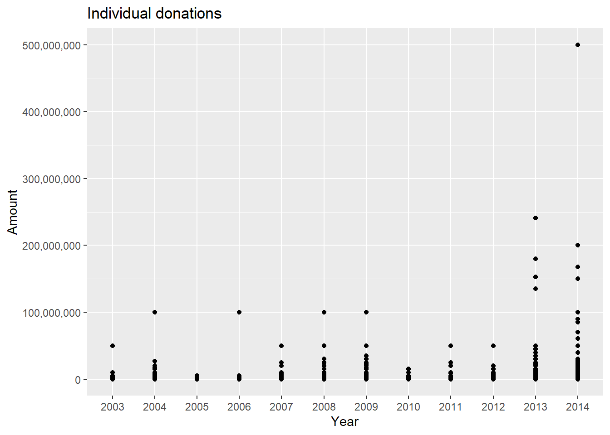
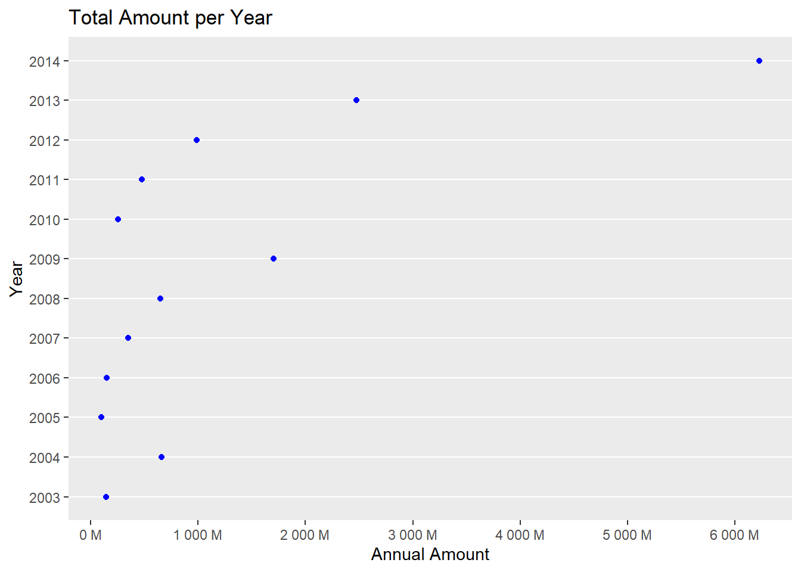

Primary Research Question
How to calculate donations KPI’s and integrate results with Excel WorkBook?
Last updated: 2022-11-23
Checks: 6 1
Knit directory: Misean/
This reproducible R Markdown analysis was created with workflowr (version 1.7.0). The Checks tab describes the reproducibility checks that were applied when the results were created. The Past versions tab lists the development history.
The R Markdown file has unstaged changes. To know which version of
the R Markdown file created these results, you’ll want to first commit
it to the Git repo. If you’re still working on the analysis, you can
ignore this warning. When you’re finished, you can run
wflow_publish to commit the R Markdown file and build the
HTML.
Great job! The global environment was empty. Objects defined in the global environment can affect the analysis in your R Markdown file in unknown ways. For reproduciblity it’s best to always run the code in an empty environment.
The command set.seed(20221115) was run prior to running
the code in the R Markdown file. Setting a seed ensures that any results
that rely on randomness, e.g. subsampling or permutations, are
reproducible.
Great job! Recording the operating system, R version, and package versions is critical for reproducibility.
Nice! There were no cached chunks for this analysis, so you can be confident that you successfully produced the results during this run.
Great job! Using relative paths to the files within your workflowr project makes it easier to run your code on other machines.
Great! You are using Git for version control. Tracking code development and connecting the code version to the results is critical for reproducibility.
The results in this page were generated with repository version b5753a4. See the Past versions tab to see a history of the changes made to the R Markdown and HTML files.
Note that you need to be careful to ensure that all relevant files for
the analysis have been committed to Git prior to generating the results
(you can use wflow_publish or
wflow_git_commit). workflowr only checks the R Markdown
file, but you know if there are other scripts or data files that it
depends on. Below is the status of the Git repository when the results
were generated:
Ignored files:
Ignored: .Rhistory
Ignored: .Rproj.user/
Ignored: analysis/.Rhistory
Ignored: data/.Rhistory
Untracked files:
Untracked: Establishing key performance indicators for charities.pdf
Untracked: code/rsconnect/
Untracked: data/home_sales.rds
Untracked: data/leads_df.rds
Untracked: data/loan_df.rds
Untracked: data/power_df.csv
Untracked: data/reading-sheets.pdf
Untracked: data/readr-cheat-sheet.pdf
Untracked: data/telecom_df.rds
Untracked: data/trip.csv
Unstaged changes:
Modified: analysis/Data-Management.Rmd
Modified: code/Donations-Dashboard.Rmd
Modified: code/Donations-Dashboard.html
Modified: data/donations-India-update.xlsx
Note that any generated files, e.g. HTML, png, CSS, etc., are not included in this status report because it is ok for generated content to have uncommitted changes.
These are the previous versions of the repository in which changes were
made to the R Markdown (analysis/Data-Management.Rmd) and
HTML (docs/Data-Management.html) files. If you’ve
configured a remote Git repository (see ?wflow_git_remote),
click on the hyperlinks in the table below to view the files as they
were in that past version.
| File | Version | Author | Date | Message |
|---|---|---|---|---|
| html | 032de5a | JJCoen | 2022-11-22 | Build site. |
| html | 4a8d686 | JJCoen | 2022-11-22 | Build site. |
| Rmd | 2000cb7 | JJCoen | 2022-11-22 | wflow_publish("analysis/Data-Management.Rmd") |
| html | 723be95 | JJCoen | 2022-11-22 | Build site. |
| Rmd | ac61807 | JJCoen | 2022-11-22 | wflow_publish("analysis/Data-Management.Rmd") |
| html | 3560d29 | JJCoen | 2022-11-16 | Build site. |
| html | 4fd7495 | JJCoen | 2022-11-16 | Build site. |
| Rmd | 3ec87e6 | JJCoen | 2022-11-16 | add Data Analysis and Training |
Pre-process data so that it is amenable to analysis. Specifically, generate the tables needed for creating a Donations Dashboard displaying:
Save tables to separate sheets in Excel Workbook.
What exactly is clean data? Clean data is accurate, complete, and in a format that is ready to analyze. Characteristics of clean data include data that are:
Common symptoms of messy data include data that contain:
Source: Dataquest
How to calculate donations KPI’s and integrate results with Excel WorkBook?
Donations to political parties from India, 12 Yrs data (2003-04 to 2014-15). Source: data.world.
While there are some high value donations, most of the contributions are below $500,000. The Data Summary shows individual donations up to a value of $10,000,000. There are an additional 191 donations beyond that value. These are not shown since they tend to skew the data.
Connect to Excel workbook and inspect names of sheets.
donate_book <- loadWorkbook("./data/donations-political-parties-India.xlsx")
getSheets(donate_book)[1] "Donation_data"Store Donation_data sheet as a table.
donations_dt <- read_excel("./data/donations-political-parties-India.xlsx", sheet ="Donation_data") %>%
as.data.table()Remove columns having all missing entries and inspect the remaining columns.
donations_dt <- donations_dt[, c(1:8)]
glimpse(donations_dt)Rows: 13,573
Columns: 8
$ Party <chr> "CPI", "CPI(M)", "INC", "INC", "INC", "BJP", "BJP"…
$ Name <chr> "Aziz Pasha", "V K Ramachandran", "Dr. Manmohan Si…
$ Type <chr> "Others", "Others", "Others", "Others", "Others", …
$ Address <chr> "16-B, Ferozeshah Road New Delhi-1", "No.1, First …
$ `PAN Given` <chr> "Y", "Y", "N", "N", "N", "Y", "N", "N", "Y", "N", …
$ Amount <dbl> 3000000, 10000000, 108000, 54000, 54000, 100000, 1…
$ `Contribution Mode` <chr> "CASH", "000037, HDFC Bank Bengaluru, Dt. 16.03.20…
$ `Financial Year` <chr> "2010-11", "2014-15", "2014-15", "2011-12", "2011-…if (!require("stringr")) install.packages("stringr")
library("stringr")
names(donations_dt) <- str_replace_all(names(donations_dt),
"\\s", "_") %>%
tolower()
colnames(donations_dt)[1] "party" "name" "type"
[4] "address" "pan_given" "amount"
[7] "contribution_mode" "financial_year" The contribution_mode column has 234 missing entries and
address has 1 missing. Replace these with `unknown`
designation.
donations_dt[is.na(address), address := "unknown"]
donations_dt[is.na(contribution_mode), contribution_mode := "unknown"]# Create new column named year
donations_dt[, year := str_sub(financial_year, end=-4)][, financial_year := NULL]
# Convert to numeric
donations_dt[, year := as.numeric(year)]
# Order data table by year
donations_dt <- donations_dt[order(year)]This is in order to display axis marks correctly.
donations_dt[, year_num := year][, year := as.factor(year)]library(scales) # to display values in thousands
Attaching package: 'scales'The following object is masked from 'package:purrr':
discardThe following object is masked from 'package:readr':
col_factor# Basic scatter plot
ggplot(donations_dt, aes(x=year, y=amount)) +
geom_point() +
labs(title="Individual donations",
x="Year",
y = "Amount") +
scale_y_continuous(label=comma ) 
\(\rightarrow\) There are eleven
contributions over $100 Million out of 13,573 separate donations. Since
these points skew the data, it is better to set the limit for
amount to $100 Million when plotting data. However, it is
necessary to retain these contributions for the sake of accuracy.
Create a new table giving the total donations by year.
options("scipen"=100, "digits"=4)
donate_year <- donations_dt[, .(year_sum = sum(amount)), by = year ]Visualise.
# Donations Growth
g2 <- ggplot(donate_year,
aes(x=year, y = year_sum)) +
geom_point(color = "blue") +
labs(title="Total Amount per Year",
x="Year",
y = "Annual Amount") +
theme(legend.position="none") +
# amount in thousands
# scale_y_continuous(label=comma ) +
# amount in Millions
scale_y_continuous(labels = label_number(suffix = " M",
scale = 1e-6),
n.breaks=6) +
theme(
panel.grid.major.x = element_blank(),
panel.grid.minor.x = element_blank()
) +
coord_flip()
g2
createSheet(donate_book, name ="Donation_year")
writeWorksheet(donate_book, donate_year, sheet ="Donation_year")Clean character strings in name column.
# remove punctuation and replace whitespace with underscore
donations_dt$name <- str_replace_all(donations_dt$name,
pattern = "[[:punct:]]",
replacement = "")
donations_dt$name <- str_replace_all(donations_dt$name,
pattern = "\\s",
replacement = "_") donations_dt[, unique(name)] %>%
length()[1] 10807There are 10,807 unique donors out of 13,573 total donations given. So, most donations are once-off.
by_donor <- donations_dt[, .(tot_amount = sum(amount)), by=name]
createSheet(donate_book, name ="Donation_donor")
writeWorksheet(donate_book, by_donor, sheet ="Donation_donor")donor_by_year <- donations_dt[, .(sum(amount)),
by = .(year_num, name)]
setnames(donor_by_year, "V1", "year_amount")
donors_13 <- donor_by_year[year_num == 2013, name]
donors_14 <- donor_by_year[year_num == 2014, name]
# donors in 2014 but not in 2013
setdiff(donors_14, donors_13) %>%
length()[1] 1227# donors who gave in 2013 and in 2014
num_retain <- intersect(donors_14, donors_13) %>%
length
num_retain/length(donors_14) * 100[1] 13.41donors_previous <- donor_by_year[year_num %in% 2003:2013, name]
# donors who gave in 2014 and in any previous year
num_retain_all <- intersect(donors_14, donors_previous) %>%
length
num_retain_all/length(donors_14) * 100[1] 18.28Number of donors making contributions per year.
contributions <- donations_dt[, .N, by = year]
contributions[, year := seq.int(from = 2003, to = 2014,
by = 1)]
createSheet(donate_book, name ="Contributions")
writeWorksheet(donate_book, contributions, sheet ="Contributions")# Save RData
save(by_donor, donate_year, contributions, donations_dt,
file = "./data/donate.RData")
# Excel WorkBook
saveWorkbook(donate_book, file = "./data/donations-India-update.xlsx")Another common task is centering and scaling numeric variables, known as normalization. For each numeric column, we subtract the mean and divide by the standard deviation. This transforms numeric variables to standard deviation units with a mean of 0 and standard deviation of 1. Interpreting normalized variable values is very intuitive. From the normalized total_time value, we see that spending 1,273 seconds on the website is 1-point-19 standard deviations greater than the average time spent by customers.
sessionInfo()R version 4.2.2 (2022-10-31 ucrt)
Platform: x86_64-w64-mingw32/x64 (64-bit)
Running under: Windows 10 x64 (build 22000)
Matrix products: default
locale:
[1] LC_COLLATE=English_United States.utf8
[2] LC_CTYPE=English_United States.utf8
[3] LC_MONETARY=English_United States.utf8
[4] LC_NUMERIC=C
[5] LC_TIME=English_United States.utf8
attached base packages:
[1] stats graphics grDevices utils datasets methods base
other attached packages:
[1] scales_1.2.1 readxl_1.4.1 forcats_0.5.2 stringr_1.4.1
[5] purrr_0.3.5 readr_2.1.3 tibble_3.1.8 tidyverse_1.3.2
[9] skimr_2.1.4 kableExtra_1.3.4 data.table_1.14.4 visdat_0.5.3
[13] ggplot2_3.4.0 dplyr_1.0.10 tidyr_1.2.1 XLConnect_1.0.6
[17] workflowr_1.7.0
loaded via a namespace (and not attached):
[1] httr_1.4.4 sass_0.4.2 jsonlite_1.8.3
[4] viridisLite_0.4.1 modelr_0.1.10 bslib_0.4.1
[7] assertthat_0.2.1 getPass_0.2-2 highr_0.9
[10] googlesheets4_1.0.1 cellranger_1.1.0 yaml_2.3.6
[13] pillar_1.8.1 backports_1.4.1 glue_1.6.2
[16] digest_0.6.30 promises_1.2.0.1 rvest_1.0.3
[19] colorspace_2.0-3 htmltools_0.5.3 httpuv_1.6.6
[22] pkgconfig_2.0.3 broom_1.0.1 haven_2.5.1
[25] webshot_0.5.4 processx_3.8.0 svglite_2.1.0
[28] whisker_0.4 later_1.3.0 tzdb_0.3.0
[31] timechange_0.1.1 git2r_0.30.1 googledrive_2.0.0
[34] farver_2.1.1 generics_0.1.3 ellipsis_0.3.2
[37] cachem_1.0.6 withr_2.5.0 repr_1.1.4
[40] cli_3.3.0 crayon_1.5.2 magrittr_2.0.3
[43] evaluate_0.18 ps_1.7.2 fs_1.5.2
[46] fansi_1.0.3 xml2_1.3.3 tools_4.2.2
[49] hms_1.1.2 gargle_1.2.1 lifecycle_1.0.3
[52] reprex_2.0.2 munsell_0.5.0 callr_3.7.3
[55] compiler_4.2.2 jquerylib_0.1.4 systemfonts_1.0.4
[58] rlang_1.0.6 grid_4.2.2 rstudioapi_0.14
[61] labeling_0.4.2 base64enc_0.1-3 rmarkdown_2.18
[64] gtable_0.3.1 DBI_1.1.3 R6_2.5.1
[67] lubridate_1.9.0 knitr_1.40 fastmap_1.1.0
[70] utf8_1.2.2 rprojroot_2.0.3 rJava_1.0-6
[73] stringi_1.7.8 Rcpp_1.0.9 vctrs_0.5.0
[76] dbplyr_2.2.1 tidyselect_1.2.0 xfun_0.31